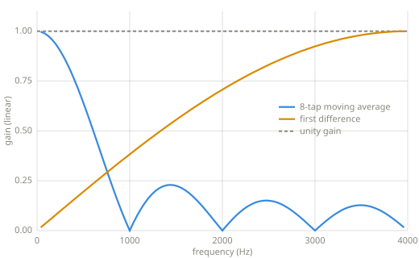
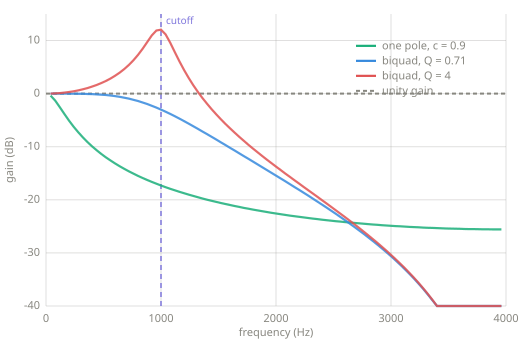

Filters¶
A filter is gain that depends on frequency: a volume knob for regions of the spectrum. Tone controls, equalizers, and synthesizer sweeps are all filters.
Chapter 9 — filters.
Frequency response¶
Chapter 8 measured signals; a filter is measured the same way. Play a probe tone through it, compare output amplitude to input amplitude, and repeat across frequencies. The resulting gain-per-frequency curve is the filter's frequency response, and every response figure on this page is measured exactly that way:
def frequency_response(apply, sr, freqs, amp=0.5):
"""Measure a filter's gain at each frequency by running probe tones.
apply is a function from a signal to a signal. Each probe plays for
half a second; the first half of the output is discarded so the
filter settles, and the Chapter 8 probe reads the amplitude that
remains. The gain is output amplitude over input amplitude.
"""
from frequency import sine_amount
gains = []
for f in freqs:
n = int(0.5 * sr)
probe = [amp * math.sin(2.0 * math.pi * f * i / sr)
for i in range(n)]
y = apply(probe)[n // 2:]
gains.append(sine_amount(y, sr, f) / amp)
return gains
A filter only changes how much of each frequency comes through. It cannot add a frequency the input does not contain. Effects that add frequencies, like the distortion of Chapter 3, are nonlinear.
FIR: weighted sums of the input¶
The first family computes each output sample as a weighted sum of recent input samples, read from the Chapter 7 ring buffer:
def fir(x, coeffs):
"""Finite impulse response: a weighted sum of recent input samples.
y[n] = coeffs[0]*x[n] + coeffs[1]*x[n-1] + ... over len(coeffs) taps.
"""
line = RingBuffer(len(coeffs))
out = []
for s in x:
y = coeffs[0] * s
for k in range(1, len(coeffs)):
y += coeffs[k] * line.read(k)
line.push(s)
out.append(y)
return out
def moving_average(n):
"""Equal FIR taps: the simplest lowpass."""
return [1.0 / n] * n
FIRST_DIFFERENCE = [0.5, -0.5] # the simplest highpass
The weights are called taps, and the family is called FIR, for finite impulse response. A single impulse in produces the tap list out, and the output ends after the last tap. Chapter 7 drew impulse responses; an FIR filter's is finite because the filter has no feedback to keep an input circulating.
Averaging smooths a signal, which dulls its edges, and Chapter 8 showed that edges are high-frequency content. The moving average is therefore a lowpass filter: it passes low frequencies and attenuates high ones. The first difference responds to change and ignores steady level, which makes it a highpass:

Two FIR responses, measured by the probe method above. The moving average passes low frequencies and nulls every tone whose cycles fit its window exactly. The first difference blocks steady level and passes high frequencies.
IIR: feedback¶
The second family feeds output back in. The Chapter 5 smoother belongs to this family and is its simplest member:
def one_pole(x, c):
"""The Chapter 5 smoother as a filter: feedback with one coefficient.
y[n] = c * y[n-1] + (1 - c) * x[n], for 0 <= c < 1.
"""
y = 0.0
out = []
for s in x:
y = c * y + (1.0 - c) * s
out.append(y)
return out
The family is called IIR, for infinite impulse response. The feedback keeps a fraction of every input circulating, so the response to an impulse decays without ever exactly ending. The feedback comb of Chapter 7 is the same idea with a long delay in the loop; the one-pole filter is a comb whose delay is a single sample.
Chapter 5 deferred the name one-pole to this chapter. A filter's behavior is summarized by its transfer function, a ratio of two polynomials, and the roots of the denominator are called poles. Each feedback term contributes one pole, so a filter with one feedback coefficient is a one-pole filter. A pole marks a frequency region where feedback concentrates gain, and stronger feedback makes the response sharper and more resonant. The Learn more references develop this in full.
The biquad¶
Most practical audio filtering is built from the biquad, which combines two taps of input history with two of feedback:
def biquad(x, coeffs):
"""Two taps of input history and two of feedback: the standard audio IIR.
coeffs is (b0, b1, b2, a1, a2), already normalized.
"""
b0, b1, b2, a1, a2 = coeffs
x1 = x2 = y1 = y2 = 0.0
out = []
for s in x:
y = b0 * s + b1 * x1 + b2 * x2 - a1 * y1 - a2 * y2
x2, x1 = x1, s
y2, y1 = y1, y
out.append(y)
return out
def rbj_lowpass(sr, freq, q=0.7071):
"""Lowpass biquad coefficients from the Audio EQ Cookbook."""
w0 = 2.0 * math.pi * freq / sr
alpha = math.sin(w0) / (2.0 * q)
cw = math.cos(w0)
a0 = 1.0 + alpha
return ((1.0 - cw) / 2.0 / a0, (1.0 - cw) / a0, (1.0 - cw) / 2.0 / a0,
-2.0 * cw / a0, (1.0 - alpha) / a0)
def rbj_highpass(sr, freq, q=0.7071):
"""Highpass biquad coefficients from the Audio EQ Cookbook."""
w0 = 2.0 * math.pi * freq / sr
alpha = math.sin(w0) / (2.0 * q)
cw = math.cos(w0)
a0 = 1.0 + alpha
return ((1.0 + cw) / 2.0 / a0, -(1.0 + cw) / a0, (1.0 + cw) / 2.0 / a0,
-2.0 * cw / a0, (1.0 - alpha) / a0)
The coefficient formulas come from Robert Bristow-Johnson's Audio EQ Cookbook, the standard recipe collection for audio biquads. Two parameters drive them: the cutoff frequency, and Q, which sets resonance. At \(Q = 0.71\) the passband is maximally flat. Higher Q lifts a peak at the cutoff, and that peak is the resonance heard in synthesizer filter sweeps.

Three IIR lowpass responses, measured. The one-pole rolls off gently. The biquad falls faster past its cutoff, and raising Q from 0.71 to 4 lifts a resonant peak at the cutoff itself.
Key parameters¶
| Parameter | What it controls |
|---|---|
| Cutoff | Where the passband ends (Hz). |
| Q | Resonance: how sharply the response peaks at the cutoff. |
| Taps / order | How many history terms the filter uses, and so how steep it can be. |
Pitfalls
- Feedback can diverge. The echo of Chapter 7 grew without bound past feedback 1, and IIR filters inherit the risk. Coefficients outside the stable range make the output grow without bound instead of filtering.
- FIR filters delay the signal. A symmetric FIR with \(N\) taps emits its response centered \((N-1)/2\) samples late, which is a fixed latency in a real-time path. Long FIR filters trade latency for steepness.
- A linear filter cannot add frequencies. New frequencies in the output mean the process is nonlinear, deliberately or otherwise.
Related effects¶
- Envelopes: the one-pole smoother, introduced there as the envelope follower's machinery.
- Delay lines: the comb and allpass are filters built from long delays, and the reverberator is a filter network.
- Frequency-domain effects: reshaping the spectrum directly, once Chapter 10 provides the transform.
Learn more¶
- Robert Bristow-Johnson, Audio EQ Cookbook, w3.org/TR/audio-eq-cookbook — the biquad recipes this page uses.
- Julius O. Smith III, Introduction to Digital Filters, ccrma.stanford.edu/~jos/filters — transfer functions and poles, in full.
- Steven W. Smith, The Scientist and Engineer's Guide to Digital Signal Processing, dspguide.com — FIR design, windowed sinc, and the trade-offs this chapter only names.